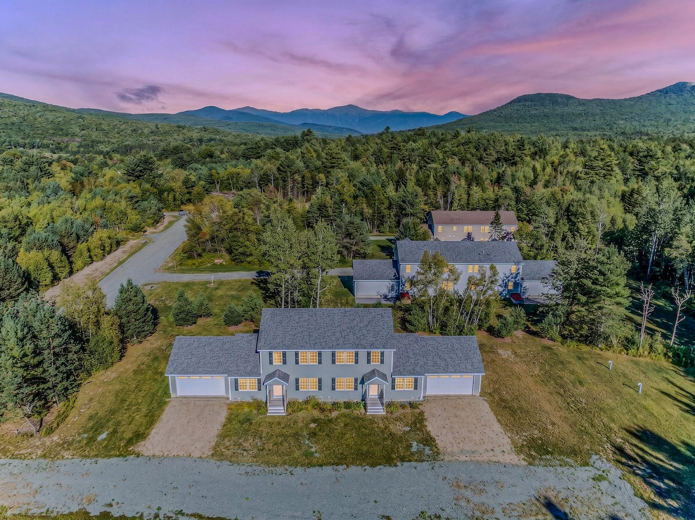
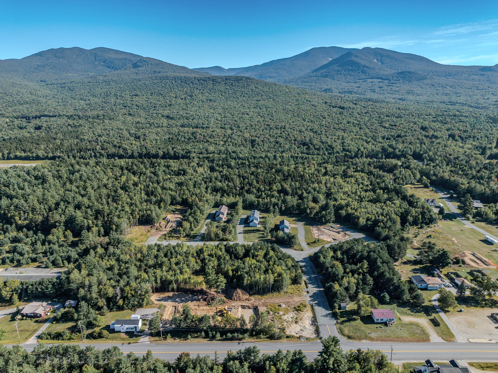
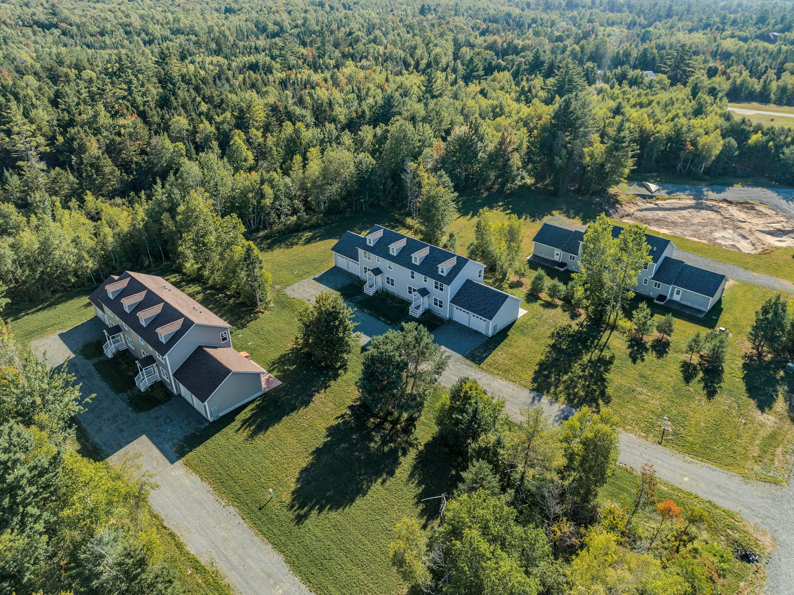

Twin Mountain · New Hampshire
A new village in the White Mountains
Single-family homes and duplex residences on acre lots, minutes from the slopes, the trails and the river. Two new duplex residences are available now.
Welcome
Twenty-seven homesites at the center of the White Mountains
Twin Peaks Village is a new planned community on Solar Spring Circle, just off Route 3 in Twin Mountain. Single-family homes and duplex residences sit on level lots of about an acre, served by public water and underground utilities, with private roads cared for by a homeowners' association.
The first three duplex buildings are complete and have never been occupied. The model home, The Hunter, was set on its foundation on September 16, 2026 and will be finished this fall.

Residences
Available now, and what comes next


Why here
A basecamp for every season
Twin Mountain sits where Routes 3 and 302 meet, between Franconia Notch and Crawford Notch, with the Presidential Range on the horizon.
Winter
Alpine and Nordic skiing at Bretton Woods and Cannon Mountain, and the regional snowmobile corridor network.
Spring and summer
Hiking in the Presidential Range and Crawford Notch, fishing and paddling on the Ammonoosuc River, golf, and the Mount Washington Cog Railway.
Fall
Foliage on Route 302 through Crawford Notch and on the rail trails.
Progress
Where things stand

Visit
See it in person
Showings are by appointment with the listing agents. Tell us which residence or homesite interests you and we will arrange a time.